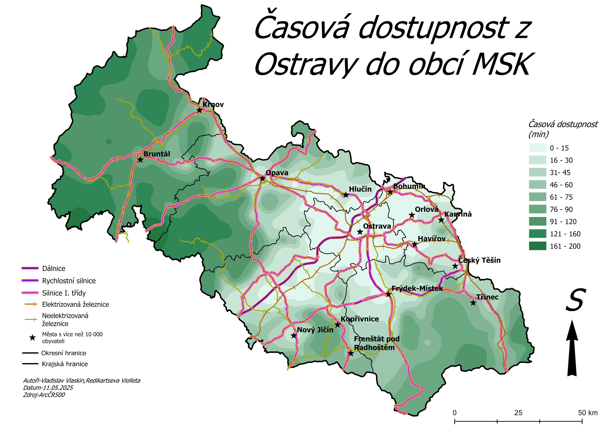

Další informace
Socioekonomická geografie se zaměřuje na studium vztahů mezi společností, ekonomikou a prostorem. Sleduje, jak lidé využívají území, jak se rozvíjejí regiony, města i venkov a jak ekonomické a sociální procesy ovlivňují kvalitu života obyvatel.
Na této stránce najdete doplňující informace, odkazy na doporučené zdroje a zajímavé materiály týkající se regionálního rozvoje, globalizace, migrace či trvale udržitelného rozvoje. Cílem je nabídnout širší pohled na to, jak se prostorová organizace společnosti promítá do každodenního života i do fungování ekonomiky.
Socioekonomická geografie propojuje poznatky z různých vědních disciplín a pomáhá lépe porozumět světu kolem nás – jeho dynamice, nerovnostem i příležitostem pro budoucí rozvoj.
Jak vám socioekonomická geografie bere čas
Každý z nás žije v rytmu, který nepřetržitě ovlivňuje něco neviditelného — socioekonomická geografie. To, kde pracujete, jak daleko máte obchod, jak dlouho jedete do školy nebo jestli stihnete večer odpočívat, není náhoda. Je to výsledek toho, jak jsou v prostoru rozmístěné služby, pracovní příležitosti a doprava. Města šetří čas, venkov ho stojí víc. Když bydlíte v centru, dojdete kamkoli za pár minut. Když žijete na okraji kraje, první autobus jede možná až po šesté a do práce dorazíte po hodinové jízdě. Za rok jsou to stovky hodin ztraceného volného času — a mapa dostupnosti to ukáže jasně: světlé oblasti jsou rychlé, tmavé „polykají“ minuty. Tomu se říká časová chudoba. Nejde o nedostatek peněz, ale o nedostatek volného času, který mizí při každodenním dojíždění. Geografie tak nepřímo rozhoduje o vašem stresu, kvalitě života i o tom, kolik času máte sami pro sebe. A proto má tento obor větší vliv, než se zdá. Socioekonomická geografie není teorie — je to mapa toho, kolik života vám zůstane mezi prací a domovem.

Socioeconomic Status
Krátké video přibližující, jak socioekonomická geografie pomáhá porozumět světu kolem nás.